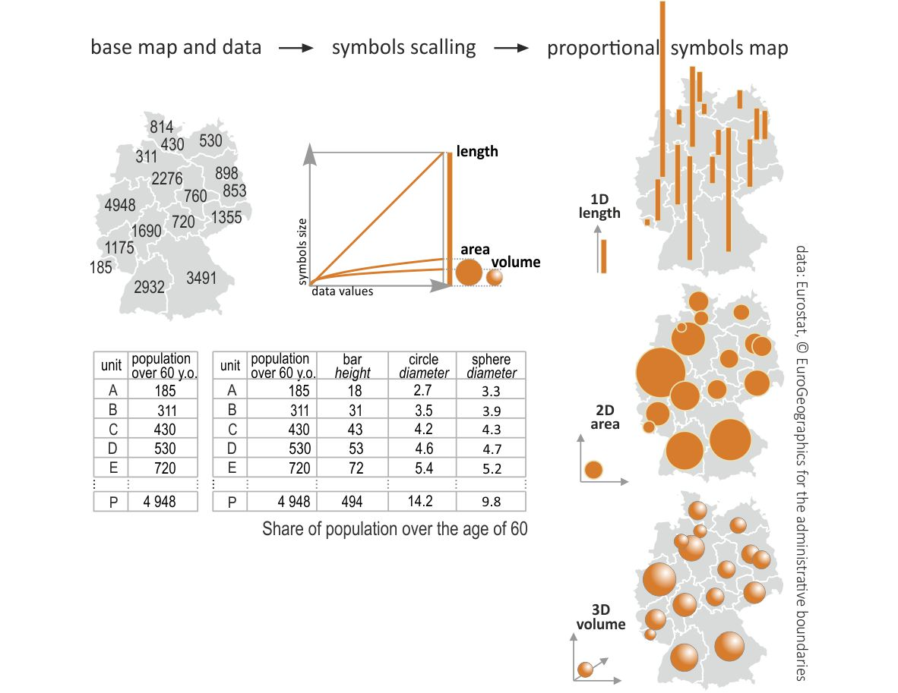
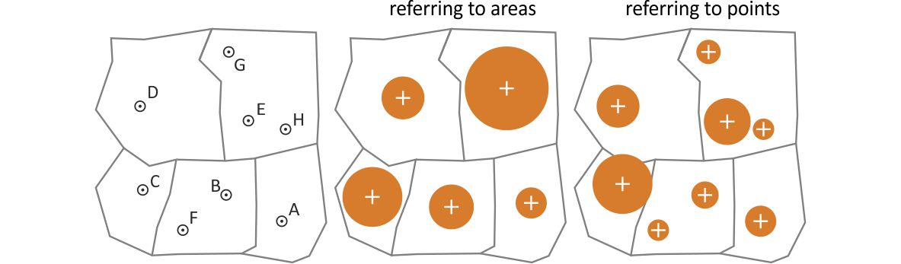

Figure 1. Proportional Symbol Map - US Oil Consumption
About Proportional Symbol Map
A proportional symbol map or proportional point symbol map is one of common thematic maps. This map uses visual variable size to visualize quantitative data. (Dent, Borden D., Torguson, Jeffrey S.; Hodler, Thomas W., 2009)

Figure 2. Common Map Types from
Kraak MJ, RE Roth, B Ricker, A Kagawa, and G Le Sourd (2020)
Proportional Symbol Map Data
From the previous page, we have learnt about data type just like it is shown in Figure 2. Proportional Symbol Map is used to represent Quantitative Data
The examples of Quantitative data which are 'Abrupt - Discrete' for Proportional Symbol Map:
→ Population of a specific region, presidential election results of a specific country, total gross domestic product.
Proportional Symbol Map Design Considerations
From Figure 3 beside, we can learn that the proportional symbol should consider about the symbol scalling. In this web, we will learn more about the 2D symbol. You need to know that the 2D scale symbol will be strongly depend on the range of data. You will learn it in the exercise part after this section.
You may have your data occurs based on the area, therefore you need to adjust your point symbol to the centroid of each area. What if you have the data which occurs on the point inside an area? Then, you need to adjust it to the exact point of the data distribution. You can take a look at Figure 4 about how the point symbol referring to area and referring to points. For this case, the symbol referring to area shows the average of the points for each area.
What if your symbol overlap? Don't worry! You can order it from the largest to the smallest just like it is shown in Figure 5 below. Other option would be to use opacity for the symbol.
Figure 5. When symbols overlap

Figure 3. Symbol scaling by dimensionality
Figure 4. Proportional symbols referring to points and areas
by Golebiowska, I., Korycka-Skorupa, J., and Slomska-Przech, K. (2021)
Create a Proportional Symbol Map
create freely, change your data and symbol scale to see the difference affected by both
Data Description⬇️
will be shown once you select the data